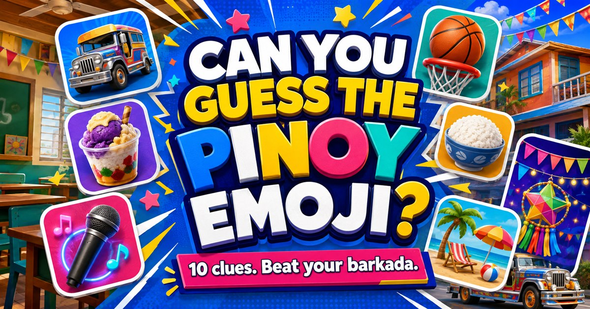

PINOY BRAIN CHECK
Guess the Pinoy Emoji!
How sharp is your Pinoy radar?
Decode ten familiar Filipino things from emojis. Choose fast—your time goes on the result!
WHAT DO THESE EMOJIS MEAN?
YOUR PINOY EMOJI RANK
Rank is a playful estimate based on your score, not live population statistics.

Ten clues every Pinoy has seen
The challenge mixes everyday Filipino favorites—from jeepneys and videoke to Simbang Gabi and the balikbayan box. Each clue has three choices, so trust your first instinct and keep moving.
Your result combines accuracy with a playful rank made for barkada competition. The clock is only for bragging rights; wrong answers do not add a penalty.
Can You Decode the Emojis?
A few emojis can look simple until you have to figure out what they are actually trying to say.
Pinoy Emoji Challenge turns familiar Filipino-themed clues into ten quick emoji puzzles. Each round gives you an emoji combination and three possible answers.
Some clues may seem obvious immediately. Others require you to look at the emojis differently before the answer makes sense.
Unlike the personality quizzes on Hi Classmate, this one has actual correct and incorrect answers.
How the Challenge Works
There are ten rounds and three choices for every emoji clue.
Choose the answer you think matches the clue and continue until all ten have been completed.
The game records your accuracy as well as how long you take to finish. At the end, your performance is placed into one of five playful result ranks.
Taking your time may help your accuracy, but solving the clues quickly adds another challenge.
Accuracy or Speed?
Try your first attempt without overthinking the clues and see how you score.
Then replay the challenge and find out whether you can improve your accuracy or completion time. You can also share the challenge with friends and compare scores.
A perfect result is much more satisfying when somebody else has already claimed that the quiz was easy.